Add customization options on an avatar
Animaze supports 2 types of Color customizations (classic&hue-shifter), Animation customizations and Attachment customization.
Let’s start with the color customizations first. Have your customization maps ready for it. Read more about them here.
Classic Color Customization
The provided AvatarFrogTest avatar benefits from color customization options, proportions animations, and Props slots. Below you can learn how to add and debug them so that you can customize the avatar in the Animaze app by changing its colors and size, or adding Props to it :)
More info on this subject can be read in the Animaze Editor Manual.
Let’s start.
-
In the Editor Panel, click on the Customization Option button.

-
In the new opened window, go to Color tab and push the Add button to start.

-
Click on the Color customization tab to expand it, then click on the Color Mask box to select the texture AvatarFrogTest_Body_CM2 from the assets library

-
Repeat the action for the Customized base texture, selecting AvatarFrogTest_Body_CSTM texture.

-
Time to select the Target Material, in this case, it’s the Body.

-
Set the Skin tag by clicking on the drop-down list of the Customization Tag. This tag helps the Animaze Apps to group customization options into user-friendly categories like eyes, skin, hair etc.

-
The color mask allows the addition of one or multiple colors on the avatar. It was created with 3 color channels, and they need to be added in order to work. Click on the Add channel mask button to begin this process. A window with Channel targets will appear, go ahead and select the Red channel first.

-
The channel needs color assignment. Expand the Red channel tab, then click on the color box to select a new color from the Color Picker window. Hit OK when done.

-
Set the Skin tag by clicking on the drop-down list of the Customization Tag.

10. Add the Green & Blue channels by clicking on the Add channel mask button anew and repeat the above actions for each newly added channels.
11. Let’s use the debuggers to see how it’s working. Go to the Tools menu and select Customization Debugger. A floating window will appear.

12. In the Color tab of the Debugger, click on the skin color(s) that you want to replace, choose a color from the Color Picker, and hit OK when you are happy with the results. You can either save the new colors or revert to the previous ones by using the Save & Revert buttons of this debugger.

Hue-Shifter Customization
For this type of customization, we will use Ardalys to show you how it can be attained. Have the Customization Mask for your avatar ready, as shown here.
1.In the Editor Panel, click on the Customization Options button.
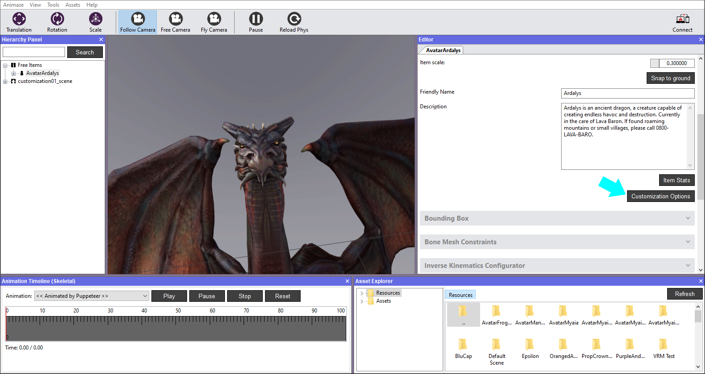
2.In the newly opened window, go to the Hue Shifter tab and push the Add button to start.
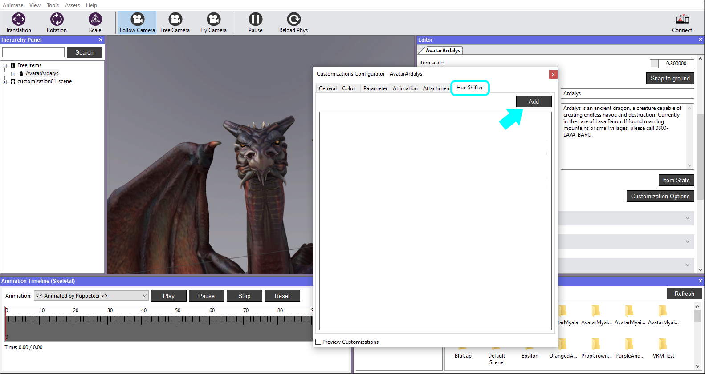
3. Click on the Color Mask box to select the respective texture from the assets library and then set the Target Material. We set the Tag as Body and added the Red channel.
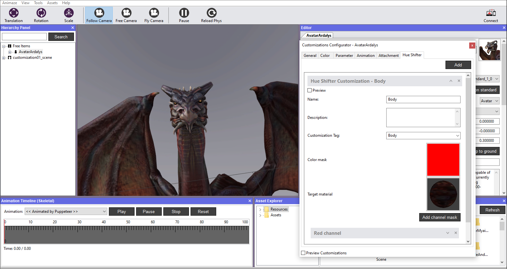
4.In the channel details area, you need to have a unique color for both Color and Average Color boxes. The values set in the Color Picker RGB, determine the color for both Color & Average Color. Read on how to obtain it from the diffuse texture here.
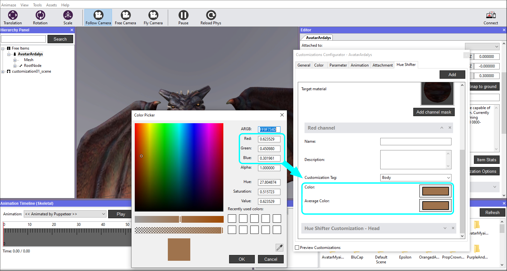
5.Ardalys has multiple meshes, therefore, we added another customization for the head, so that his body is simultaneously customized with his head. This is possible when you set the same Customisation Tag, in this case, we used “Body“. The diffuse texture is the same, so we also used the same color for the customization channel.
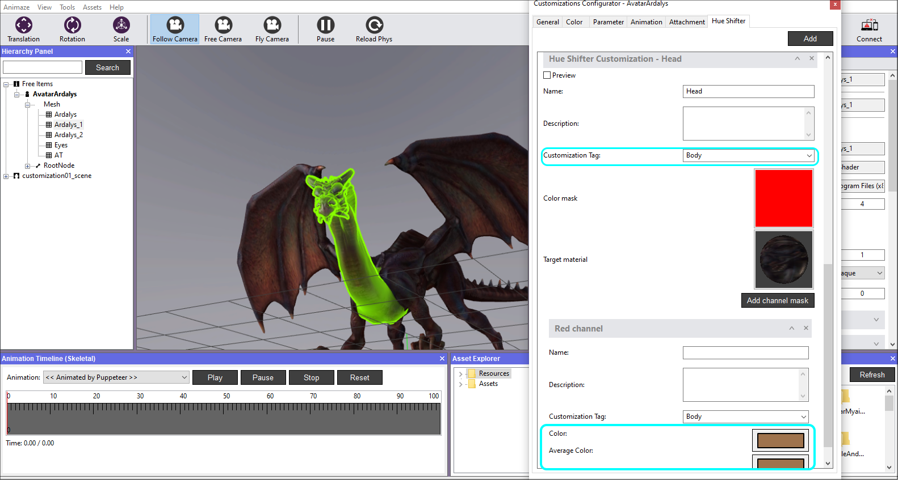
6.Let’s use the debugger to see how it’s working. Go to the Tools menu and select Customization Debugger. A floating window will appear.
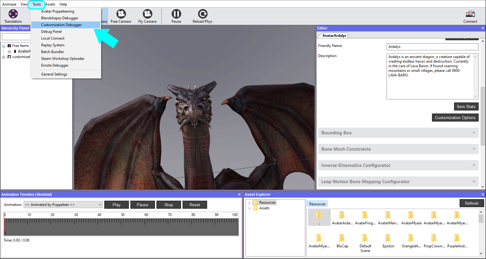
7.Check the Preview Customization box, then click on the color box below to open the Color Picker.
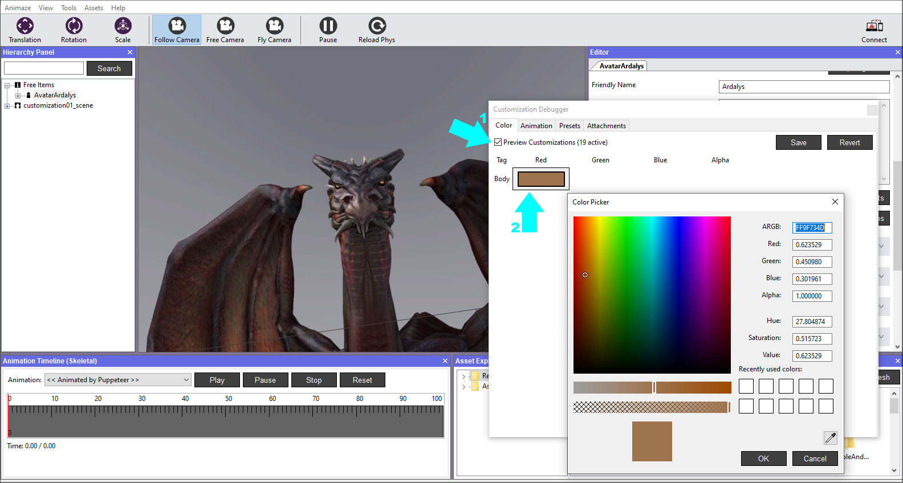
8.Hold and drag the cursor within the color space to see how the customization works. You can either save the new color, meaning that, when enabling the customization in animaze apps, the color selected here will be set as default. Or revert to the previous one by using the Save & Revert buttons of the debugger.
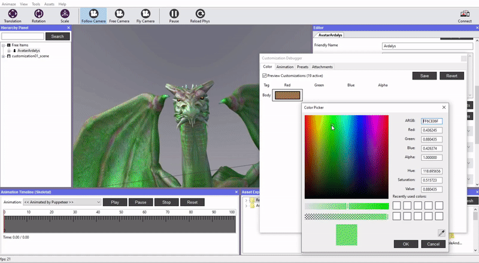
Animation Customization
1.Let’s add animation customization now. Open the Customization Options window from the Editor Panel, go to the Animation tab, and click on Add button.

2.Expand the newly added customization and click on the Browse button, find the source folder that contains the .fbx files, open the Animations folder and select ModifyProportions_Head animation.
Note, that the location and name of the source folder will vary depending on where you saved it and what you named the folder. The default name of the folder is “AvatarFrogTest”. The source folder gets copied entirely into the Assets folder (\Holotech\Animaze Editor\Data\Assets), so you can use this folder to find sources faster.

3.Click the Compute default value button to calculate the middle range of the scaling animation. The particular scaling animation used here features the default pose around the middle of the animation timeline, but to get a very precise value, the Compute default value button evaluates the animation in 1000 samples and checks each sampled pose to the default pose, trying to find the exact match. Once found, it automatically fills the Value text box with the percentage of the animation where it matches the default pose.

4.Set the Head tag by clicking on the drop-down list of the Customization Tag. This tag helps the Animaze Apps to group customization options into user-friendly categories like eyes, skin, hair etc.

5.Go to the Tools menu and select Customization Debugger. A floating window will appear.
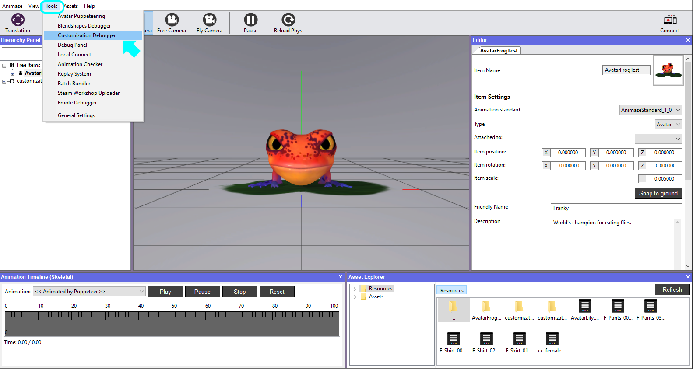
6.In the Animation tab of the Debugger, click, hold and slide the mouse right or left to change the size of the avatar’s head. You can either save the new size or revert to the previous one by using the Save & Revert buttons of this debugger.
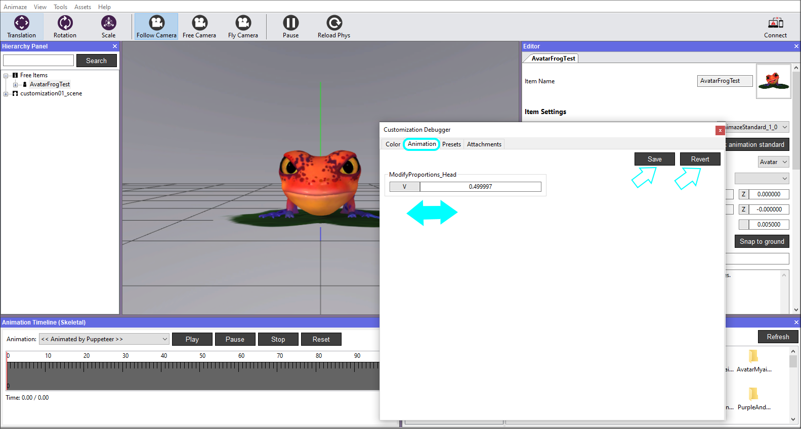
Attachment Customization
The avatar also contains a few prop bones, meaning that you are able to add a hat to it, glasses, and a mustache.
1.In the General tab of the Customization Options window click on the Detect available attachment slots button. This will add Prop options in the Attachment tab of the current window.

2.In the Attachment tab expand each Prop Customization and set the corresponding tag for each (Hat, Facial_Hair & Glasses) so that the system can recognize them and attach the props accordingly when used. Do it for each Prop option like below.


Let’s use the debuggers to see how everything is working.
3. Go to the Tools menu and select Customization Debugger. A floating window will appear.
4.In the Attachments tab of the Debugger, click on the Hat prop you want to try out and see the avatar in the viewport.
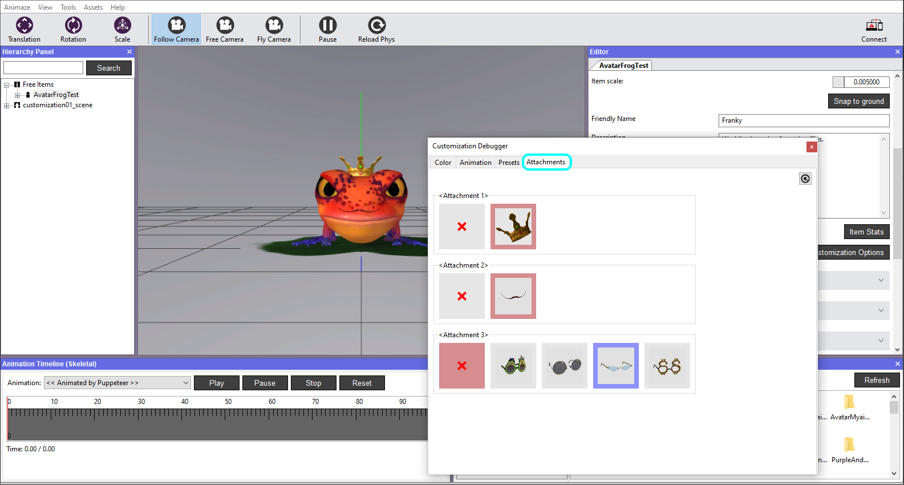
Note that once you close the Customization Debugger, all unsaved data is lost, as the avatar returns to its previous state, colors, and sizes, as when you finished adding the textures in the customization options.
Save item in Hierarchy Panel when you are done. If you exit the Animaze Editor without saving, all of your work will be lost.